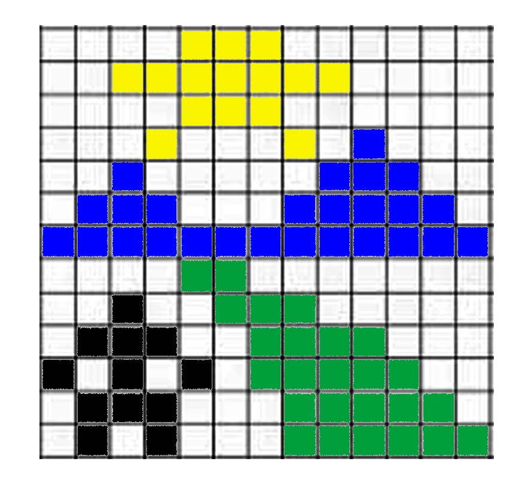

HTML MakerEl detalle radica en la formación, la educación y el ambiente donde se desarrolla el ser humano, si una persona va creciendo en un ambiente positivo, esta ira asimilando de forma correcta, toda la información que llega a su cerebro.
El ser humano debe ser preparado para utilizar ambos hemisferios de su cerebro, el derecho para crear soluciones y el izquierdo para ejecutarlo.
Tampoco las decisiones, debe tomarlo en suposiciones, debe basarse en experiencias verídicas.
En una gran mayoría de los habitantes, la visión que tienen de la vida, es errónea.
Y esta visión equivocada hace que nuestro progreso sea muy lento con relación a otros países.
Mientras nosotros estamos alzando el pie para dar el primer paso, nuestros vecinos ya han dado tres o cuatro pasos.
Veo a la gente, veo tantas cosas que están mal y se me ocurren algunas preguntas.
¿Porque la gente habla de algo?
¿Porque actúa de cierta forma?
Tenemos tantos ejemplos que nos permitirán tal vez conocer un poco más las cosas y de esta forma actuar de cierta forma de acuerdo a lo que viene a ser el diario vivir.
Cuando Dios estaba creando el mundo, iba colocando a lo largo del planeta, diferentes riquezas y talentos para las personas. Esto lo hacía con el fin de que todos, de alguna forma se beneficien de todo lo que había sido creado.
Pero al llegar por un determinado lugar. Dios empezó a colocar todo tipo de riquezas, naturales, y minerales, como ser: el petróleo, bosques con grandes variedades de vida silvestre, etc.
La mayoría de la gente solo se disponía a vivir, el día tras día, muchas personas entre hombres y mujeres, generalmente los adultos, pensaban que las cosas se hacían de forma mágica.
Pensaban, que, por el simple hecho de repetir los procedimientos, que habían realizados sus padres o abuelos, el resultado se repetiría, pero no era así.
Lo triste ahora es que, hay gente que sigue pensando de la misma forma.
Muchos piensan que las personas ya están predestinadas a vivir ciertas experiencias iguales o muy similares a la de sus progenitores.

Una cosa que es muy importante que debo mencionar es el hecho de la mentalidad que tenemos los bolivianos y esto no solamente involucra a las clases más humildes, ya que si fuera así podemos decir que la mentalidad de una persona o grupo humano es de cierta forma, debido a su nivel cultural. Pero lamentablemente no es así.
El mismo tipo de mentalidad, también lo tienen nuestros líderes, políticos, gobernantes, maestros, padre de familia, etc.
HTML Maker